현재 이해도
이전 노트를 편입한 것과 현재 다시 설명·계산할 수 있는지는 구분한다. 이 문서는 아직 재검증하지 않았으므로 0%에서 시작한다.
검증 완료 0 / 3 · 0%
- ○ 핵심 식의 각 항이 무엇을 뜻하는지 자기 말로 설명한다.
- ○ 작은 숫자로 결과를 예측하고 손계산한다.
- ○ NumPy 또는 scikit-learn 결과와 비교해 재현한다.
원문 보존 단위
선형회귀와 OLS 계산 전체 흐름
📌 선형 회귀와 OLS 회귀 분석 정리 (기울기 계산 과정 포함)
1. 회귀분석(Regression Analysis)이란?
- 두 개 이상의 변수(X, Y) 사이의 관계를 찾아 예측 모델을 만드는 방법.
- 특히 선형 회귀(Linear Regression) 는 데이터를 가장 잘 설명하는 직선을 찾는 과정.
원문 학습 그림 1
여기서:
- ( a ) : 기울기(coef_) → X가 변할 때 Y가 얼마나 변하는지 나타냄.
- ( b ) : 절편(intercept_) → X가 0일 때 Y의 값.
- ( x ) : 독립변수 (예: 키)
- ( y ) : 종속변수 (예: 몸무게)
2. OLS(최소자승법, Ordinary Least Squares)란?
- 회귀선(예측 직선)을 찾기 위해 사용되는 방법.
- 각 데이터 포인트와 회귀선 사이의 오차(Residual) 를 최소화하는 선을 찾음.
- 오차를 제곱해서 더한 값(잔차 제곱합, SSE)을 최소화하는 방식.
3. 기울기(a)와 절편(b)의 차이
기울기와 절편을 구하는 공식은
한 점일 때와 여러 점일 때 다르다
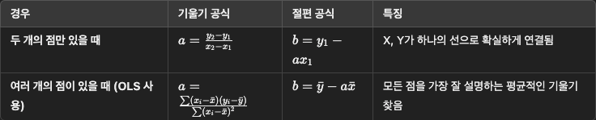
원문 학습 그림 2
4. 여러 개의 점이 있을 때 기울기 구하는 과정 (OLS 사용)
✅ (1단계) X와 Y의 평균 구하기
주어진 데이터:
원문 학습 그림 3
원문 학습 그림 4
각각의 평균을 구함:
원문 학습 그림 5
원문 학습 그림 6
✅ (2단계) (X - X평균)과 (Y - Y평균) 계산
각 데이터에서 평균을 뺀 값을 구함.
| X | Y | X - X̄ |
Y - Ȳ |
|---|---|---|---|
| 170 | 75 | -0.375 | 3.25 |
| 180 | 81 | 9.625 | 9.25 |
| 160 | 59 | -10.375 | -12.75 |
| 165 | 70 | -5.375 | -1.75 |
| 158 | 55 | -12.375 | -16.75 |
| 176 | 78 | 5.625 | 6.25 |
| 182 | 84 | 11.625 | 12.25 |
| 172 | 72 | 1.625 | 0.25 |
✅ (3단계) 분자 계산
기울기 공식의 분자는 다음과 같아:
원문 학습 그림 7
각각 곱한 값을 더해보자.
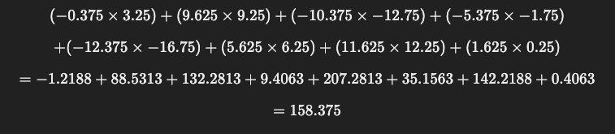
원문 학습 그림 8
✅ (4단계) 분모 계산
기울기 공식의 분모는 다음과 같아:
원문 학습 그림 9
각각의 값을 제곱한 후 더해보자.
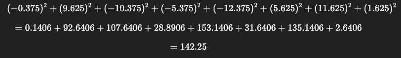
원문 학습 그림 10
✅ (5단계) 기울기 계산
이제 기울기 𝑎 를 구해보자.
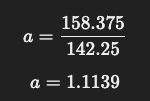
원문 학습 그림 11
즉, X(키)가 1 증가할 때, Y(몸무게)는 약 1.1139 증가한다.
5. 실제 코드로 확인하기
import numpy as np
import matplotlib.pyplot as plt
from sklearn.linear_model import LinearRegression
# 데이터 준비
키 = np.array([170, 180, 160, 165, 158, 176, 182, 172]).reshape((-1, 1))
몸무게 = np.array([75, 81, 59, 70, 55, 78, 84, 72])
# 직접 기울기 계산
x_mean = np.mean(키.flatten())
y_mean = np.mean(몸무게)
numerator = np.sum((키.flatten() - x_mean) * (몸무게 - y_mean)) # 분자
denominator = np.sum((키.flatten() - x_mean) ** 2) # 분모
a = numerator / denominator # 기울기
b = y_mean - (a * x_mean) # 절편
# 결과 출력
print(f"기울기 a (coef_): {a:.4f}")
print(f"절편 b (intercept_): {b:.4f}")
# sklearn 비교
model = LinearRegression().fit(키, 몸무게)
print("\n[sklearn 결과]")
print(f"coef_: {model.coef_[0]:.4f}")
print(f"intercept_: {model.intercept_:.4f}")
# 그래프 그리기
plt.scatter(키, 몸무게, label="실제 데이터")
plt.plot(키, model.predict(키), color='red', label="회귀선")
plt.xlabel("키 (cm)")
plt.ylabel("몸무게 (kg)")
plt.legend()
plt.show()
6. 최종 정리
✔ 기울기를 구하는 과정
- X와 Y의 평균을 구함
- 각 데이터에서 평균을 뺀 값(
X - X평균,Y - Y평균)을 구함 - 이 값들을 곱해서 합을 구함 → 분자
- (X - X평균)을 제곱해서 합을 구함 → 분모
- 분자 ÷ 분모를 하면 기울기(a) 완성!
reshape((-1, 1))은 왜 필요한가? (의미 포함)
1. 1차원 vs 2차원의 개념
우리는 데이터(예: 키, 몸무게)를 다룰 때, 1차원과 2차원의 차이를 이해해야 합니다.
- 1차원 배열 (Vector): 숫자의 리스트
→ [170, 180, 160, 165, 158, 176, 182, 172]
→ 데이터가 "나열"되어 있음.
- 2차원 배열 (Matrix, 행렬): 숫자가 행(row)과 열(column)로 정리됨
→ [[170], [180], [160], [165], [158], [176], [182], [172]]
→ 각 데이터가 "행렬 형태"로 구성됨.
🔹 1차원과 2차원의 차이를 쉽게 이해하는 방법
- 1차원: 그냥 값들의 나열 →
(8,)형태 (8개의 값이 1줄로 있음) - 2차원: 값들이 행렬 형태 →
(8, 1)형태 (8개의 값이 각각 개별적인 행을 가짐)
즉, 1차원 배열은 리스트 형태의 데이터,
2차원 배열은 행렬(Matrix) 형태의 데이터라고 생각하면 됩니다.
2. reshape((-1, 1))의 의미
키 = np.array([170, 180, 160, 165, 158, 176, 182, 172]).reshape((-1, 1))
위 코드에서 reshape((-1, 1))은 1차원 데이터를 2차원으로 변환하는 역할을 합니다.
🔹 1의 의미
1을 넣으면 NumPy가 자동으로 행(row) 개수를 맞춰줌.- 데이터 개수가
8개라면 자동으로8행 1열(8, 1) 크기의 2차원 배열이 생성됨.
즉,
.reshape((-1, 1))
은 (n, 1) 형태의 2차원 배열로 변환하는 역할을 합니다.
3. reshape((-1, 1))이 필요한 이유
1️⃣ 머신러닝 모델은 2차원 데이터를 입력받음
scikit-learn의LinearRegression.fit(X, y)에서X는(샘플 개수, 특징 개수)형태의 2차원 배열이어야 합니다.- 만약
X가 1차원 배열이면 오류가 발생합니다.
# 1차원 배열 (잘못된 입력)
X = np.array([170, 180, 160, 165, 158, 176, 182, 172])
model.fit(X, y) # ❌ 오류 발생!
# 2차원 배열 (올바른 입력)
X = np.array([170, 180, 160, 165, 158, 176, 182, 172]).reshape((-1, 1))
model.fit(X, y) # ✅ 정상 동작
2️⃣ 벡터(1차원) vs 행렬(2차원)의 차이
numpy에서 1차원 배열은 단순한 값들의 나열이므로 행과 열의 구분이 없음.- 하지만 머신러닝에서는 입력 데이터가 여러 개일 수 있으므로 각 데이터가 개별적인 행(row)으로 존재해야 함.
예를 들어,
1차원 배열 → 모델이 "이게 샘플 8개인지, 하나의 긴 벡터인지" 헷갈릴 수 있음.
2차원 배열 → 모델이 "이건 8개의 개별 샘플이다" 라고 확실히 인식.
3️⃣ 입력 데이터의 형태 통일
- 머신러닝 모델은
X의 차원이 일정해야 함. reshape((-1, 1))을 사용하면 일관된 형태(n, 1)로 데이터를 변환할 수 있음.
4. reshape((-1, 1))을 적용한 데이터 비교
🔹 1차원 배열 (변환 전)
X = np.array([170, 180, 160, 165, 158, 176, 182, 172])
print(X.shape) # (8,)
print(X)
출력:
(8,)
[170 180 160 165 158 176 182 172]
(8,)→ 1차원 배열 (8개의 요소)- 데이터가 하나의 벡터처럼 나열됨.
🔹 2차원 배열 (변환 후)
X = np.array([170, 180, 160, 165, 158, 176, 182, 172]).reshape((-1, 1))
print(X.shape) # (8,1)
print(X)
출력:
(8, 1)
[[170]
[180]
[160]
[165]
[158]
[176]
[182]
[172]]
(8,1)→ 8개의 행과 1개의 열을 가진 2차원 배열.- 각 값이 하나의 행으로 존재 → 머신러닝 모델이 샘플 데이터로 인식 가능.
📌 최종 요약
| 비교 | 변환 전(1차원) | 변환 후(2차원) |
|---|---|---|
| Shape | (8,) |
(8, 1) |
| 예시 | [170, 180, 160, ...] |
[[170], [180], [160], ...] |
| 의미 | 단순한 벡터 | 샘플마다 하나의 행을 가지는 행렬 |
| 모델 입력 | 입력 Shape 계약과 맞지 않을 수 있음 | 샘플·Feature 축이 명시됨 |
🚀 즉, reshape((-1, 1))은 데이터를 머신러닝 모델이 인식할 수 있도록 변환하는 필수 과정!
원문 보존 단위
단순 선형회귀 공식과 절편 유도
선행으로 알아야하는 내용
공분산
“공분산 / 분산 = 기울기” 인 이유
공식
1. 단순 선형 회귀 방정식
단순 선형 회귀의 기본 공식:
단순 선형 회귀식 y = ax + b
여기서:
- a = 기울기 (Slope)
- b = 절편 (Intercept)
우리는 기울기 a를 먼저 구한 후, 절편 b를 계산합니다.
2. 기울기 a 계산
기울기는 공분산을 분산으로 나눈 값으로 계산됩니다.
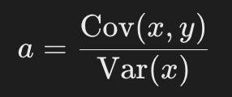
원문 학습 그림 2
여기서:
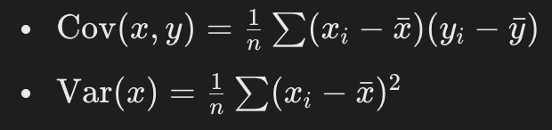
원문 학습 그림 3
즉, 공분산을 통해 x와 y가 함께 변하는 정도를 측정하고, 이를 x의 변화량(분산)으로 나누어 기울기를 구합니다.
3. 절편 b 계산
기울기를 구한 후, 절편은 다음 공식으로 계산됩니다.
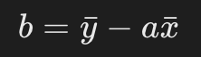
원문 학습 그림 4
여기서:
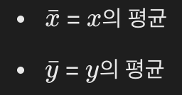
원문 학습 그림 5
원문 학습 그림 6
4. 절편 공식 유도 과정
회귀선이 데이터의 평균점을 지나야 한다는 사실을 이용하여 절편을 구해봅시다.
1️⃣ 평균점을 회귀식에 대입
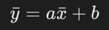
원문 학습 그림 7
2️⃣b에 대해 정리
즉, 절편 b는 기울기 a에 의해 결정된 평균 y 값과 실제 평균 y 값 간의 차이를 보정하는 역할을 합니다.
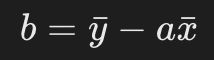
원문 학습 그림 8
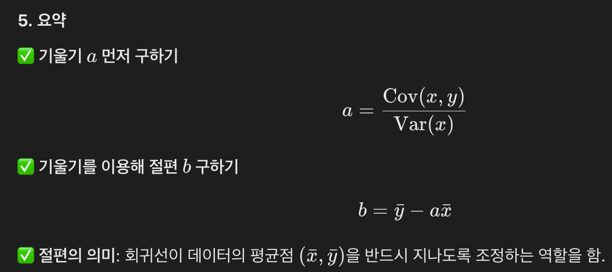
원문 학습 그림 9
절편은 그러면 해당값들의 평균 기울기와 평균 x y 값을 통해 평균 절편을 구한거네?
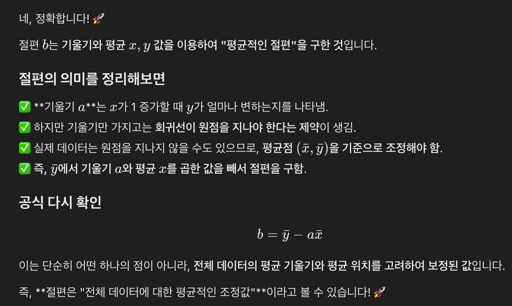
원문 학습 그림 10
원문 보존 단위
공분산은 왜 편차를 곱하고 합산하는가
📌 공분산과 두 변수의 관계 - 종합 정리
1. 공분산(Covariance)이란?
공분산은 두 변수가 어떻게 함께 변하는지를 측정하는 값이야.
즉, 한 변수가 증가할 때 다른 변수가 증가하는지, 감소하는지, 혹은 관계가 없는지를 분석하는 것이 목표야.
공분산의 공식:
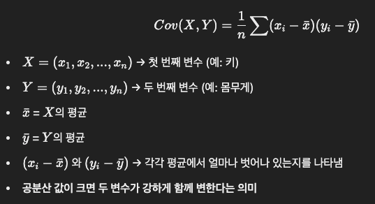
원문 학습 그림 1
2. 왜 공분산을 계산할 때 곱한 후 합산할까?
✅ 평균에서 얼마나 벗어났는지 확인하기 위해
단순히 x와 y 값을 비교하면 데이터의 전체적인 경향을 보기가 어려워.
그래서 각각의 데이터가 평균에서 얼마나 벗어났는지(편차)를 먼저 계산해.
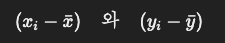
원문 학습 그림 2
✔ 이 값이 양수면 평균보다 크고, 음수면 평균보다 작다는 의미.
✅ 두 변수가 같은 방향으로 변하는지 확인하기 위해 곱함
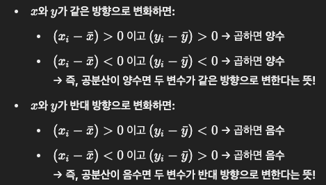
원문 학습 그림 3
✔ 곱한 값이 양수면 같은 방향, 음수면 반대 방향으로 움직임을 의미
✅ 전체적인 패턴을 보려면 합산이 필요
각 데이터 쌍마다 편차를 곱한 값만 보면 개별적인 관계만 알 수 있어.
하지만 우리는 전체 데이터에서 일관된 패턴이 있는지 확인하고 싶어.
그래서 모든 데이터에서 편차 곱한 값을 합산해서 사용해.
3. 공분산 값 해석
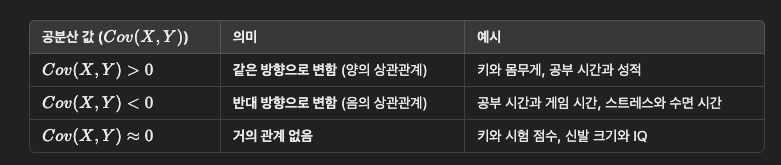
원문 학습 그림 4
✔ 공분산이 양수 → 두 변수가 같은 방향으로 변화 (키가 클수록 몸무게가 증가)
✔ 공분산이 음수 → 두 변수가 반대 방향으로 변화 (공부 시간이 많을수록 게임 시간이 줄어듦)
✔ 공분산이 0에 가까움 → 두 변수 사이에 특별한 관계가 없음
4. 예제
📌 예제 1: 키와 몸무게 (공분산 > 0, 같은 방향)
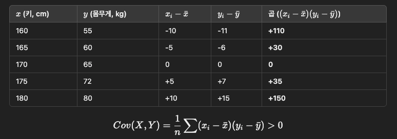
원문 학습 그림 5
✔ 공분산이 양수 → 키가 클수록 몸무게도 증가하는 경향이 있음!
📌 예제 2: 공부 시간과 게임 시간 (공분산 < 0, 반대 방향)
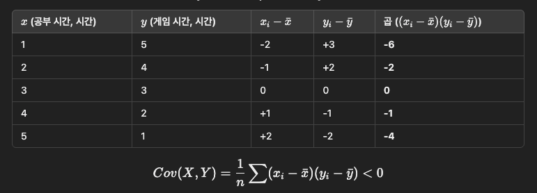
원문 학습 그림 6
✔ 공분산이 음수 → 공부 시간이 많을수록 게임 시간이 줄어드는 경향이 있음!
5. 결론
✅ 공분산을 계산할 때 왜 편차를 곱하고 합산하는가?
- 평균을 기준으로 데이터가 얼마나 벗어나는지 확인하기 위해
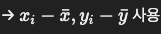
원문 학습 그림 7
- 두 변수가 같은 방향으로 움직이는지, 반대 방향으로 움직이는지 확인하기 위해 → 편차를 곱함
- 전체 데이터에서 일관된 패턴이 있는지 확인하기 위해 → 곱한 값을 합산
✔ 공분산이 양수면 같은 방향, 음수면 반대 방향, 0이면 관계 없음!
✔ 공분산을 보면 두 변수 사이의 관계를 수량적으로 측정할 수 있음! 😊
원문 보존 단위
왜 공분산을 분산으로 나누면 기울기가 되는가
그니까 공분산은 두변수가 어떻게 함께 변화하는지를 측정했지만
x가 몇일때를 고려하지 않은거고
이를 1기준으로 해야 기울기가 나오니까 분산을 통해 x가 떨어진 평균을 나눠서 1에 맞추는건가?
공분산은 두 변수가 함께 변하는 정도만 측정할 뿐, "기울기"라고 보기에는 부족합니다.
왜냐하면 공분산 자체는 "비율"이 아니라 단순한 곱의 평균이기 때문입니다.
1. 공분산이 기울기가 될 수 없는 이유
공분산 Cov(x,y)\\text\{Cov\}(x, y)은 다음과 같이 정의됩니다.
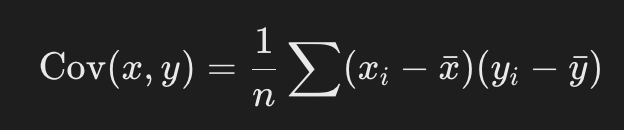
원문 학습 그림 1
여기서 중요한 점은, 공분산은 "변화량의 곱"을 평균낸 값일 뿐, 기울기가 아닙니다.
- 공분산이 양수라면, 가 증가할 때 도 증가하는 경향이 있다는 것을 의미합니다.
- 공분산이 음수라면, 가 증가할 때 가 감소하는 경향이 있다는 것을 의미합니다.
- 하지만 "기울기가 정확히 얼마인지"를 나타내지 않습니다.
공분산 값만 보면 "두 변수가 함께 변하는 정도"는 알 수 있지만, "얼마나 변화하는지", 즉 xx가 1 증가할 때 yy가 몇 증가하는지는 알 수 없습니다.
2. 왜 분산을 나누는가?
공분산을 기울기로 변환하려면 xx의 변화량을 1 기준으로 맞춰야 합니다.
즉, "1만큼 변했을 때 yy가 얼마나 변하는가"를 계산해야 하는데, 여기서 분산이 필요합니다.
분산 Var(x)는 다음과 같습니다.
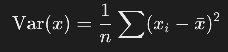
원문 학습 그림 2
분산은 x 값이 평균에서 얼마나 떨어져 있는지를 측정하는 값이므로, "단위 변화량"을 정규화하는 역할을 합니다.
그래서 기울기 a는:
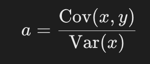
원문 학습 그림 3
이 공식의 의미는 다음과 같습니다.
- 분자는 "두 변수가 어떻게 함께 변하는지"를 측정하는 공분산입니다.
- 분모는 "입력값 xx 자체가 얼마나 퍼져 있는지", 즉 변화량의 크기를 조정하는 역할을 합니다.
- 결과적으로 공분산을 분산으로 나누면 x가 1 증가할 때 y가 몇 증가하는지를 나타내는 기울기가 됩니다.
3. 직관적인 이해
공분산이 기울기가 아닌 이유를 쉽게 설명하면 다음과 같습니다.
- 공분산은 "전체적인 변화량"을 측정하지만, 단위(비율)가 없습니다.
- 예를 들어, 단위가 "키(cm) × 몸무게(kg)" 같은 식이 됩니다.
- 우리는 "키가 1cm 증가할 때 몸무게가 몇 kg 증가하는지"를 알고 싶습니다.
- 즉, "변화율"을 알아야 합니다.
- 이를 위해 x의 변화를 "1 단위"로 정규화해야 합니다.
- 즉, x 자체가 얼마나 퍼져 있는지(변동성)를 고려해야 합니다.
- 그래서 분산을 나누어 정규화합니다.
이렇게 하면 공분산을 1 기준으로 보정하면서, 우리가 원하는 "기울기"를 얻게 됩니다. 🚀
4. 한 줄 요약
✅ 공분산은 xx와 yy가 함께 변하는 정도만 측정하지만, "기울기"는 아닙니다.
✅ 기울기는 "1 증가할 때 얼마나 변하는가"를 의미하기 때문에, xx의 변화량을 분산으로 나누어 보정해야 합니다.
✅ 그래서 공분산을 분산으로 나누면 기울기가 됩니다. 🎯
즉 X Y의 평균 변화율 / X의 평균변화율을 나눔으로서 Y의 평균변화율을 알 수 있고 이것이 곧 기울기라는거네?
즉,
✅ X와 Y의 평균 변화율(공분산) / X의 평균 변화율(분산) 을 계산하면
✅ X가 1 증가할 때 Y가 평균적으로 얼마나 변하는지를 알 수 있고,
✅ 이 값이 바로 회귀선의 기울기가 됩니다. 🎯
한 줄 요약:
공분산은 두 변수의 평균적인 동반 변화를 측정하지만, 이를 XXX의 변화량으로 정규화해야 기울기가 된다!
왜냐하면 X와 Y의 평균 변화율(공분산)의 간격은 X 평균 변화율 만큼 가졌기때문이지?
공분산( Cov(x,y))은 두 변수가 얼마나 함께 변하는지를 측정하지만, 그 변화의 크기가 x의 변화량에 따라 달라질 수 있습니다.
즉,
✅ 공분산은 x와 y가 함께 변하는 정도를 측정하지만, 그 단위는 아직 "기울기"가 아님.
✅ 왜냐하면 공분산의 변화량(간격)은 x가 얼마나 퍼져 있는지(변화의 크기, 즉 분산)만큼 조정된 상태이기 때문.
✅ 따라서 기울기를 구하려면 이 변화량을 x의 평균적인 변화량(분산)으로 나누어 1 기준으로 정규화해야 함.
그래서 최종적으로:
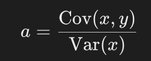
원문 학습 그림 4
이 공식이 나오는 거고, 이렇게 하면 "X가 1 증가할 때 Y가 평균적으로 얼마나 변하는지"를 정확하게 측정할 수 있게 됩니다! 🚀
편입 후 검증 메모
원문의 계산 흐름은 보존했다. 다음 세 문장은 공식을 다시 설명할 때 반드시 구분한다.
- 기울기 공식의 조건: 절편을 포함한 단순 OLS에서 기울기는
Cov(X, Y) / Var(X)다. 공분산과 분산은 둘 다n으로 나누거나 둘 다n - 1로 나누는 등 같은 분모 관례를 써야 비율이 일치한다. - “평균 변화율”과 공분산: 공분산은 각 표본의 중심화된 편차 곱을 평균한 값이다. 미분의 평균변화율이나
ΔY / ΔX자체는 아니다. 분산으로 나누었을 때 단위가Y / X가 되며, OLS가 정한 최적 직선의 기울기가 된다. - 식의 적용 범위: 이 관계는 단순 회귀의 설명이다. 설명변수가 여러 개인 다중 회귀에서는 다른 변수들을 함께 고려한 행렬식
(XᵀX)⁻¹Xᵀy로 계수를 구한다.